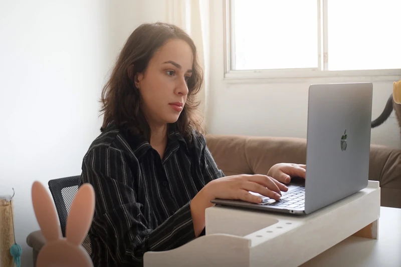
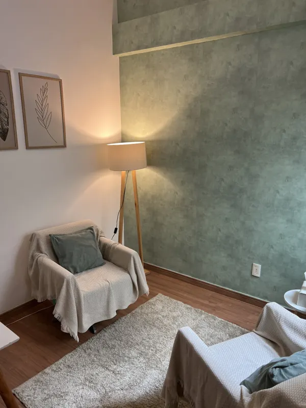
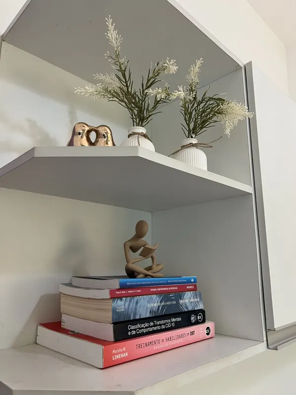

Sobrecarga que não passa
Você tá dando conta de tudo, mas parece que nada tá bom o suficiente. O trabalho toma espaço que não é dele — nos fins de semana, na cama, na sua cabeça.
Muita gente chega aqui sem saber exatamente o que sente — só sabe que algo não tá certo. Esse já é um bom ponto de partida.
Letícia Freitas · Psicóloga CRP 03/21534 · Vitória da Conquista
Às vezes é difícil colocar em palavras o que a gente tá sentindo. Veja se algum desses momentos ressoa com você.
Você tá dando conta de tudo, mas parece que nada tá bom o suficiente. O trabalho toma espaço que não é dele — nos fins de semana, na cama, na sua cabeça.
Coração acelerado sem motivo claro. Pensamento que não para. Dificuldade de curtir o presente porque você já tá preocupada com o próximo problema.
Às vezes você olha pra vida e pensa: "mas é isso?" Tomar decisões que fazem sentido pra você, e não só pros outros, é mais difícil do que parece.
Uma discussão que sai do controle. Uma tristeza que vira um buraco sem fundo. Sentir tudo com uma intensidade que cansa você e assusta quem tá por perto. Isso tem nome, tem explicação — e tem o que fazer.
Minha prática é fundamentada na Análise do Comportamento — com especializações em ACT e DBT. Cada abordagem foi escolhida porque funciona: são científicas, práticas e feitas para a vida real.
Applied Behavior Analysis · Base da minha formação
A AC parte de uma premissa simples: o comportamento humano não surge do nada. Ele é moldado pelas experiências, pelo ambiente e pelas relações ao longo da vida. Entender esse contexto é o ponto de partida para qualquer mudança real.
Em vez de tratar sintomas isolados, a AC investiga o que vem antes de um comportamento (o que o dispara) e o que vem depois (o que o mantém). Esse mapa é o que nos permite trabalhar de forma eficaz — e duradoura.
É uma abordagem científica e baseada em evidências, mas que se traduz em conversas profundas e ferramentas práticas para o dia a dia. Sem rótulos desnecessários, sem respostas prontas.
Para quem é indicada
Acceptance and Commitment Therapy · Especialização
A ACT parte de uma ideia que parece contraintuitiva: tentar eliminar pensamentos difíceis muitas vezes os torna mais intensos. Em vez de lutar contra o que você sente, a ACT te ajuda a mudar a relação que você tem com os seus pensamentos e emoções.
O foco não é sentir menos — é agir com mais liberdade, mesmo quando algo pesa. A ACT te ensina a identificar o que realmente importa pra você (seus valores) e a tomar decisões a partir disso, em vez de deixar o medo ou a ansiedade decidirem por você.
É uma das abordagens mais bem documentadas para ansiedade, burnout e questões de sentido. Funciona muito bem em formato online.
Para quem é indicada
Dialectical Behavior Therapy · Especialização
A DBT foi desenvolvida para pessoas que sentem as emoções de forma muito intensa — aquelas que frequentemente são descritas como "sensíveis demais" ou que têm dificuldade de controlar reações em momentos de estresse.
O nome "dialética" vem de uma ideia central: aceitar quem você é agora enquanto trabalha para mudar o que não tá funcionando. Não é uma coisa ou outra — é as duas ao mesmo tempo.
A DBT é estruturada em quatro módulos de habilidades práticas: regulação emocional, tolerância ao mal-estar, efetividade interpessoal e mindfulness. Cada habilidade pode ser treinada e aplicada na vida real.
Para quem é indicada
Não sabe ao certo qual abordagem faz mais sentido pra você? Não precisa saber. Esse é um dos primeiros assuntos que conversamos juntos.
Vamos conversar?Cada processo terapêutico é construído de forma personalizada. Trabalho com escuta ativa e técnicas da Análise do Comportamento (AC), uma abordagem baseada em evidências.
A ideia não é te dar respostas prontas — é te ajudar a encontrar as suas.

Pode ser num apartamento em Lisboa, num hostel em Floripa ou no quarto da sua mãe entre uma viagem e outra. O atendimento online acontece por videochamada com o mesmo cuidado de uma sessão presencial.
Você não precisa interromper o processo terapêutico cada vez que muda de endereço. A sessão vem com você — e atendo brasileiros no exterior.

Para quem está em Vitória da Conquista, o atendimento presencial acontece num espaço reservado e confortável, pensado para que você se sinta à vontade desde o primeiro momento.

A Análise do Comportamento estuda como o ambiente, as experiências e as relações moldam o jeito que a gente age, sente e pensa. Em vez de focar só nos sintomas, a AC busca entender o que está por trás dos comportamentos — e o que pode ser mudado. É uma abordagem científica, prática e profundamente humana.
Textos curtos sobre o que mais aparece no consultório. Não substituem uma avaliação, mas ajudam a dar nome ao que você está vivendo.
Separei aqui as perguntas que mais recebo antes do primeiro contato.
Isso varia de pessoa para pessoa, porque cada processo é construído de um jeito diferente. Não existe um número fixo nem uma fórmula pronta — o que existe é um acompanhamento pensado especificamente para o seu momento. Na primeira conversa dá pra alinhar expectativas com calma.
Sim, o sigilo é garantido pelo Código de Ética do Conselho Federal de Psicologia. O que é dito nas sessões fica entre você e eu — inclusive no atendimento online, feito por videochamada em ambiente reservado.
Entendo a vontade de ter uma resposta rápida, principalmente depois de pesquisar bastante por conta própria. Mas um diagnóstico não é algo que se dá numa mensagem ou numa primeira sessão — é construído ao longo de um processo de avaliação cuidadoso. O que posso te oferecer desde já é um espaço para conversar sobre o que você tem sentido, sem pressa e sem julgamento.
O atendimento é particular, sem convênio. Os valores e formas de pagamento (Pix, cartão) são conversados diretamente no primeiro contato.
Sim. A sessão online acontece por videochamada, com a mesma atenção, sigilo e cuidado técnico de uma sessão presencial — muda o formato, não a qualidade do processo.
Não. O atendimento presencial é em Vitória da Conquista, mas o atendimento online alcança qualquer lugar do mundo — sempre em português, respeitando o fuso horário de quem está do outro lado.
Mudar de país não significa recomeçar a terapia do zero — nem se explicar numa língua que ainda não é a sua casa. De Lisboa ao Porto, de Paris a Berlim: a sessão acontece onde você estiver.
Marcar primeira conversaVocê não precisa explicar o que é saudade, nem o peso de estar longe de casa. Atendo no seu idioma e no seu contexto — entendo a solidão, a adaptação e a culpa de quem refez a vida do outro lado do oceano.
Sem complicação com câmbio ou cartão internacional: o pagamento das sessões pode ser feito em euros pela Wise. Simples, transparente e no valor que você já conhece.
Atendo no horário de Brasília — que, na prática, cai na sua tarde e início de noite na Europa. Encontramos juntos um horário que cabe na sua rotina, sem virar a madrugada.
CRP 03/21534 Registro ativo · CFP
Sou psicóloga (CRP 03/21534) com formação em Análise do Comportamento (AC) e especialização em ACT e DBT. Atendo adolescentes e adultos, de forma online — pra todo o Brasil — e presencial em Vitória da Conquista, BA.
Sempre me interessei por pessoas que vivem fora do padrão. Mochileiros, nômades digitais, profissionais remotos — gente que escolheu uma vida diferente e precisa de um suporte que acompanhe esse ritmo. Entendo que "marcar consulta toda semana no mesmo lugar" não é uma realidade pra todo mundo, e tá tudo bem.
O que você vai encontrar aqui é um espaço de escuta de verdade. Sem julgamento sobre suas escolhas, sem pressa, e sem aquela sensação de que você precisa se encaixar num modelo que não é seu.
Vamos conversar?Espaço Viver · R. Dom Climério de Andrade, 145 · Recreio
Vitória da Conquista, BA · CEP 45020-390
O consultório fica no Espaço Viver, uma casa no bairro Recreio com recepção, sala de espera e salas reservadas. A sala de atendimento é silenciosa, climatizada e tem luz baixa, para a conversa acontecer sem pressa.